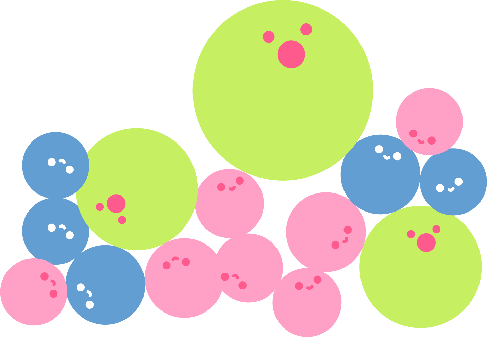
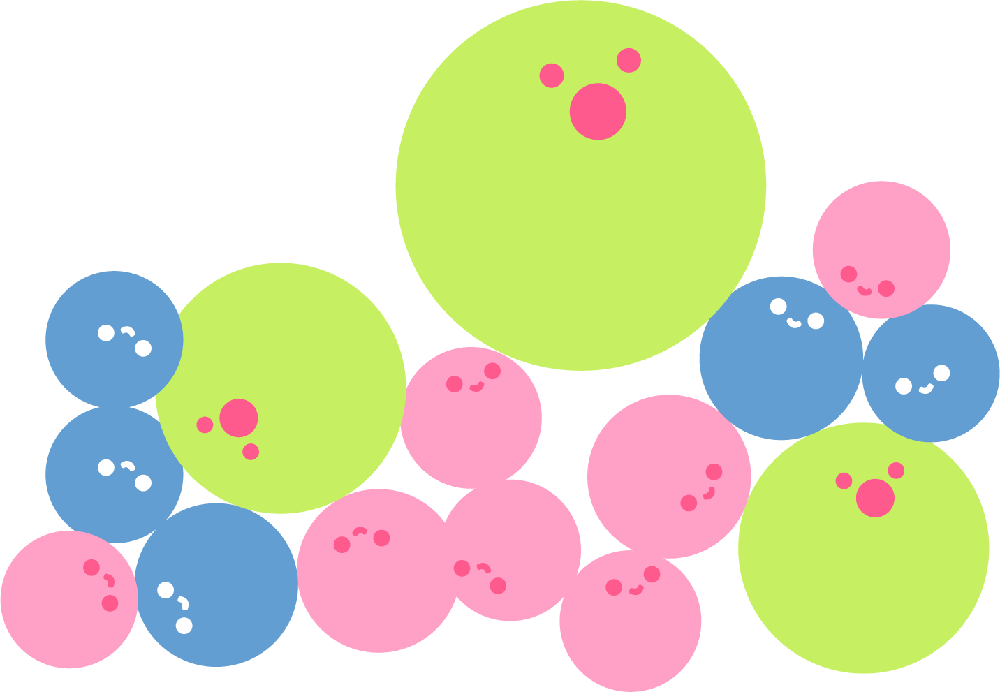

ขนมพระพาย


ขนมพระพาย ขนมที่มีมาอย่างช้า
นานตั้งแต่สมัยกรุงศรีอยุธยาเป็น
ที่นิยมมากในสมัยก่อน บริเวณภาค
กลางของประเทศไทย
นานตั้งแต่สมัยกรุงศรีอยุธยาเป็น
ที่นิยมมากในสมัยก่อน บริเวณภาค
กลางของประเทศไทย
ขุนพิทักษ์ราชกิจ ขุนทหารคู่ใจสมเด็จ
พระเพทราชาได้รับการอวยยศเป็นพระ
พิทักษ์ราชกิจได้จัดพิธีแต่งงงานขึ้นเหล่า
ชาววิเสทซึ่งมักคุ้นกับพระพิทักษ์ราชกิจ
มาเพื่อใข้ในพิธีแต่งงานโดยเฉพาะ
พระเพทราชาได้รับการอวยยศเป็นพระ
พิทักษ์ราชกิจได้จัดพิธีแต่งงงานขึ้นเหล่า
ชาววิเสทซึ่งมักคุ้นกับพระพิทักษ์ราชกิจ
มาเพื่อใข้ในพิธีแต่งงานโดยเฉพาะ

 


ความเชื่อ
ของขนมพระพาย
ของขนมพระพาย

มักการแต่งงานในสมัยโบราณ
การเฉลิมฉลองชีวิตคู่ให้สดใส
การเฉลิมฉลองชีวิตคู่ให้สดใส